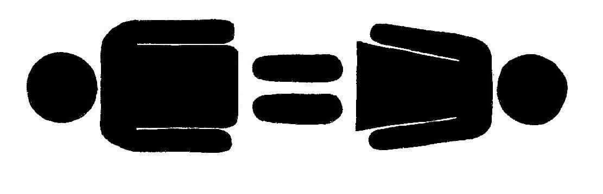

Pri zaposlovanju so bile v preteklosti vedno neenakosti med moškim in žensko. Resnična neenakost med spoloma je bila posledica dosedanjega nepravilnega vrednotenja ženskega dela. Nekatere specifičnosti veljajo za žensko delovno silo in to so: krajša delovna doba, zaposlovanje za skrajšani delovni čas, več nepredvidenih odsotnosti, poleg službenih opravljanje tudi večine družinskih obveznosti. Delodajalci jih zato mnogokrat označujejo kot neprilagodljive, nestalne in manj zanesljive.
